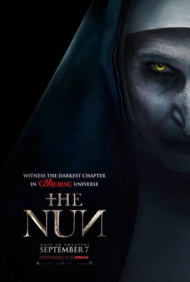
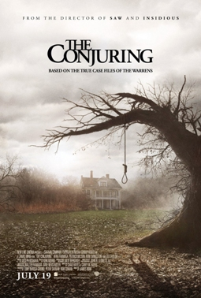
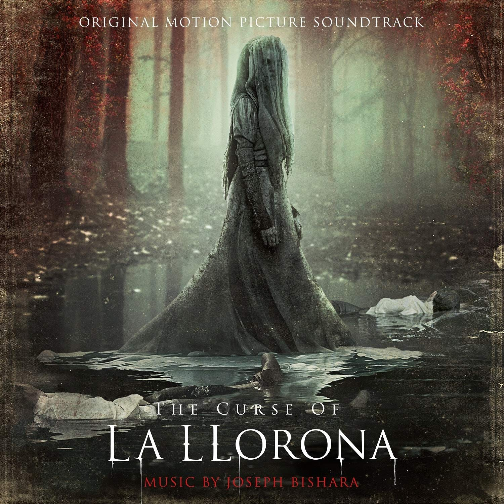
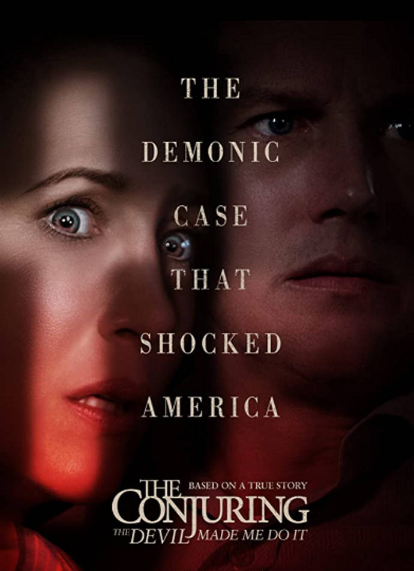

Timeline
Mira las películas en orden cronológico:
-

Septiembre, 2018
La Monja
En 1952, en el monasterio de Cârţa, en Rumanía, las dos monjas que viven allí son atacadas por una presencia demoníaca invisible cuando entran en un túnel para recuperar una antigua reliquia cristiana. La monja de mayor edad, la hermana Jessica (Ani Sava) fallece, y la superviviente, la hermana Victoria (Charlotte Hope), huye del atacante, un demonio que aparece como una monja, y muere ahorcada al saltar por una ventana. Durante el día, su cuerpo es descubierto poco después por Frenchie (Jonas Bloquet), un hombre encargado de transportar provisiones a las monjas.
-

Agosto, 2017
Annabelle: Creation
Varios años después del trágico fallecimiento de su hija, un juguetero que crea muñecas y su mujer, acogen en su casa a una monja enfermera y a un grupo de niñas, tratando de convertir su casa en un acogedor orfanato. Sin embargo, las nuevos inquilinos se convertirán en el objetivo de Annabelle, una muñeca poseída por un ser demoníaco. Secuela de "Annabelle" (2014).
-

Octubre, 2014
Annabelle
La cinta empieza con la misma secuencia vista en The Conjuring en la cual tres jóvenes son entrevistados por Ed y Lorraine Warren (Patrick Wilson y Vera Farmiga) sobre sus experiencias con una muñeca a la que habían llamado Annabelle y que supuestamente estaba poseída.
-

Julio, 2013
The Conjuring
En 1971, Roger y Carolyn Perron (Ron Livingston y Lili Taylor) son un matrimonio que se traslada con sus cinco hijas a una granja en Harrisville. El primer día como propietarios resulta ser idílico a excepción del extraño comportamiento de su perra Sadie, la cual se niega a entrar y empieza a ladrar; por otro lado, una de las hijas rompe sin querer un tablón de la pared y descubren un sótano y una de las hijas (la menor) encuentra una caja musical extraña.
-

Junio, 2019
Annabelle Comes Home
En 1968, los demonólogos Ed y Lorraine Warren se llevan a su casa a la muñeca poseída Annabelle, después de que dos enfermeras (Debbie y Camilla) aseguraran que la muñeca a menudo realizaba actividades violentas en su apartamento. Durante el trayecto, la muñeca convoca a los espíritus de un cementerio situado junto a la carretera para que ataquen a Ed, pero este consigue sobrevivir. Una vez en la casa, Annabelle es colocada en una vitrina en la sala de artefactos de la pareja y bendecida por el padre Gordon para asegurarse de que su mal está contenido.
-

Abril, 2019
The Curse of La Llorona
En 1673, México, una pareja está jugando con sus hijos en un campo, y el más pequeño de ellos le da a su madre un collar, que ella acepta agradecida. El niño cierra los ojos brevemente, y cuando los abre, su familia está desaparecida. Mientras busca a sus padres, el niño ve a su madre ahogando a su hermano en un arroyo. El niño corre horrorizado, pero su madre lo atrapa y parece ahogarlo también.
-

Junio, 2016
The Conjuring 2
6 años después de los terroríficos eventos de The Conjuring La película comienza en Amityville, Nueva York, donde Ed y Lorraine Warren trabajan intentando solucionar un caso. Lorraine se transporta a un plano astral en donde intenta encontrar el motivo de por qué hubo tantos asesinatos en esa morada, pero al seguir a un niño, se encuentra con una extraña entidad en forma de monja dentro de un espejo que anuncia la muerte de Ed. Tras estos incidentes, Lorraine le dice a Ed que no es capaz de seguir llevando adelante más casos.
-

Junio, 2021
The Conjuring : The Devil Made Me Do It